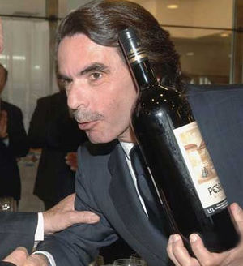
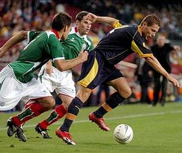

Siglo XXI
 De: La Frikipedia, la enciclopedia extremadamente seria.
De: La Frikipedia, la enciclopedia extremadamente seria.
El S. XXI fue el más importante en la historia mundial después del 3.141592 a.C. y el siglo imaginario 972927392982 d.C.
Acontecimientos destacados
El S. XXI fue un período cronológico marcado por los siguientes sucesos y hechos:
 Aznar ganador de las elecciones aspañolas
- 12 de Marzo: Un azno gana las elecciones presidenciales de Aspaña.
- 14 de Septiembre: Windows ME sale al mercado.
- 07 de Noviembre: Otro animal que triunfa en unas elecciones presidenciales. En éste caso hablamos de un primate cuya victoria tiene lugar en Estados Unidos.
- 2001:
- 11 de Enero: Científicos estadounidenses presentan el primer primate modificado genéticamente. Es así como George W. Bush hace su primera aparición pública antes de asumir su mandato como presidente.
- 11 de Septiembre: Wall Street, ejerciendo con éxito el primer trabajo de su empresa demoledora.
- 2002:
- 11 de Abril: Golpe de estado en Venezuela contra Hugo Chávez. La presidencia es ocupada por un friki haciéndose pasar por él.
- 13 de Noviembre: Se lleva a cabo un ejercicio experimental de asfaltado rápido de playas en la costa de Galicia.
- 2003:
- 20 de Marzo: George W. Bush se encapricha con los recursos naturales de un país asiático y, al no obtenerlos, decide invadir dicho territorio. Lo acompañan el azno, y otros dos países más.
- 2004:
Barbie se despendola tras el divorcio
- 12 de Febrero: Ken se separan; ella se queda con todo.
- 14 de Marzo: José Luis Rodríguez Zapatero gana las elecciones presidenciales de España gracias a la campaña electoral 3D que le regalaron unos marroquíes.
- 26 de Diciembre: Se produce un terremoto en las cercanías de Indonesia (clara señal de que se acerca el Apocalipsis) que provoca la muerte de más de 200.000 personas, animales, insectos, y miles de desaparecidos. Según las sagradas escrituras bíblicas, más de la mitad irían al infierno por no haberse confesado previamente.
- 30 de Diciembre: Aníbal Ibarra lleva a cabo sus planes de incendiar una discoteca en la ciudad de Buenos Aires. Ninguno de los ciento noventa y tres muertos resucita.
- 2005:
- 08 de Abril: Se celebra el funeral de la segunda reencarnación de S.S. Juan Pablo.
- 19 de Abril: NAZInger Z es elegido Papa por un ejército de cucarachas mutantes.
- 17 de Mayo: El congreso de España aprueba las charlas telefónicas matutinas de Zapatero con ETA.
- 21 de Mayo: Grecia gana Eurovisión. Catalunya se queda en el puesto número setenta y nueve, por debajo del País Vasco Saturnino. Extremadura queda segunda, como ya hicieran Soraya o Fran el de Barcarrota en sus respectivos concursos...
- 2006:
- 2007:
- 23 de Febrero: SATANÁS III.
- 05 de Junio:Hace su aparición el perro de la praderarl dramático. El mundo se conmociona
- 21 de Junio:Néstor Medrano recibe un premio a un post en su blog. No sería reconocido hasta el 13 de Julio.
- 2008:
- 01 de Enero: Nueva aparición de la virgen María, ésta vez en un retrete.
- 03 de Mayo: Nigeria mediante la práctica fraudulenta. Se dice que compró el voto de los ciudadanos regalando patos procedentes de Júpiter.
- 2009:
- 2010:
 Final del Mundial (de palo) de Sudáfrica
- 2011:
- 2012:
- 6 de Junio
según los mayas y game over.
- 15 de Junio:
Madrid Londres organiza los Juegos Olímpicos gracias a un Príncipe Maricón de Mónaco.
- 15 de Junio:(15.78 segundos después) Se clausuran los Juegos Olímpicos por niebla espesa.
Guerras
Ver también
Autor(es):
- Krusher
- Motherfucker
- JALAJANDRO
- Haakjvork
- Extremeño17
- Doctor grijander
- Alex2610
- Roms
- Viento
- Manamaster
Frikipedia 2005-2016, Licencia
GFDL 1.2 - Extraído por FrikiLeaks